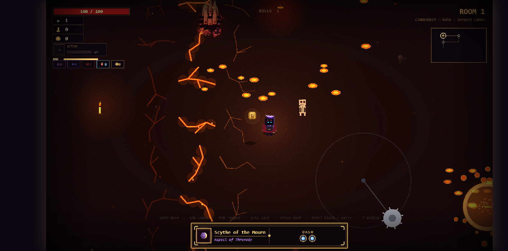
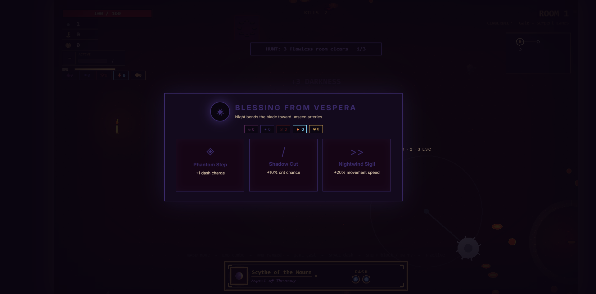

Floor I
Cinderdeep
The Forsaken Halls — molten stone and lava fissures that open underfoot.

A hand-crafted 2D roguelike. A dying underworld remakes itself each time you fall, and every death feeds the descent that follows.
The Descent
Floor I
The Forsaken Halls — molten stone and lava fissures that open underfoot.

Floor II
The drowned, fog-choked deep, where sound arrives late.
Floor III
Gilded ruin. Everything here was paid for once, and is owed again.
Floor IV
Spire-shadows and a silence that watches back.
Floor V
The last light — where the false dawn waits, and calls itself morning.
The Loop
You will fall. ASHMOURN counts on it — and so should you. What you carry out of the dark becomes the strength that takes the next run deeper.
i
Soften a blow, or release on the instant of contact for a perfect parry that opens the enemy wide.
ii
Burst across the room with invulnerability frames. Spacing is survival.
iii
Open each run with a different armament and a run-defining aspect that bends how it fights.
